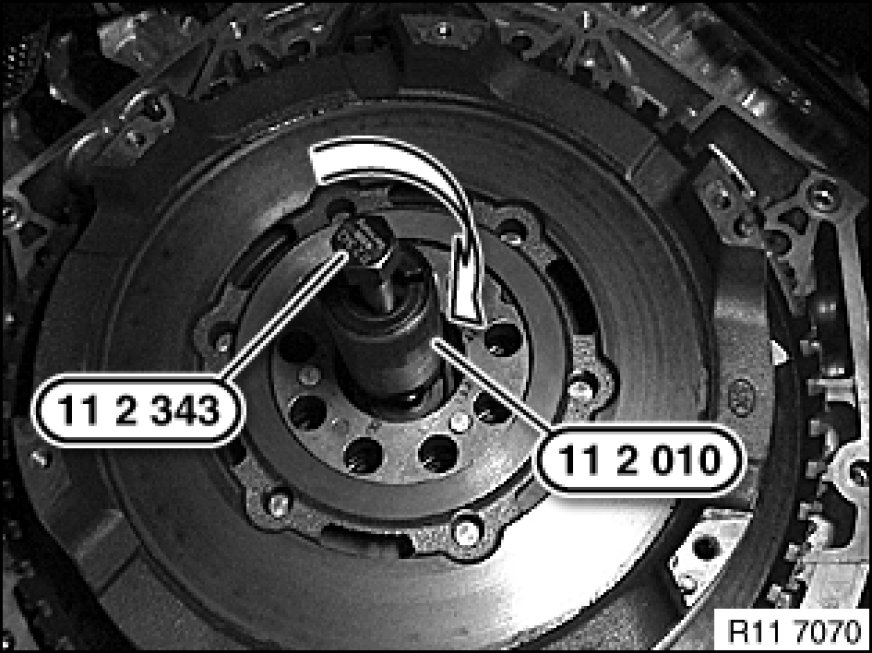
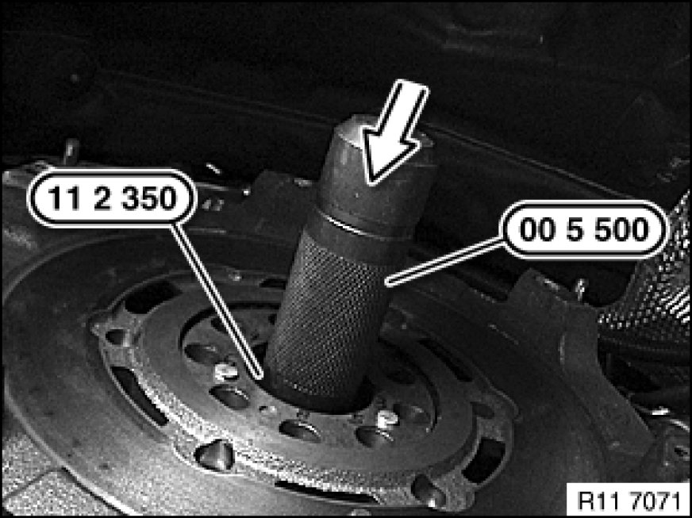

During Engine Overhaul
11 22 513 - Replacing roller bearing for dual-mass flywheel

Special tools required:
- 00 5 500 00 5 500 Handle for Drifts
- 11 2 010
- 11 2 343
- 11 2 350

Note:
Flywheel removed!

Position special tool 11 2 010 in roller bearing.
Twist out roller bearing with special tool 11 2 343.

Assemble special tools 11 2 350 and 00 5 500 00 5 500 Handle for Drifts.
Drive in roller bearing with special tools 11 2 350 and 00 5 500 00 5 500 Handle for Drifts in direction of arrow as far as it will go.
Assemble engine.